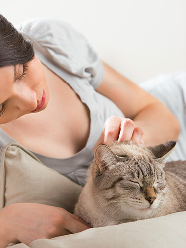

Si has decidido adoptar o comprar un gato, tienes que tener en cuenta muchas cosas. En Purina encontrarás consejos y sugerencias para tener un nuevo gato.
|  |
No hay duda de ello, los gatos son grandes mascotas. Después de todo, ¿qué hay mejor que volver a casa al final de un duro día y escuchar el ronroneo de satisfacción de una adorable bola de pelo? No hay duda de ello, los gatos son grandes mascotas. Después de todo, ¿qué hay mejor que volver a casa al final de un duro día y escuchar el ronroneo de satisfacción de una adorable bola de pelo? Los estudios demuestran que las personas con animales de compañía suelen estar más sanas y felices que aquellas que no los tienen, pero recuerda que tener un gato es una gran responsabilidad y un compromiso de por vida. Cuando estés listo para asumir este compromiso, comprobarás que tener un gato ofrece ventajas como las siguientes:
Tener un gato es muy beneficioso, pero es importante elegirlo detenidamente para estar seguro de que te adaptarás bien a tu esponjoso amigo. Tu gato ideal dependerá de tu estilo de vida y de tus preferencias personales. Por ejemplo, es posible que quieras un gato adulto al que poder acariciar en tu regazo o que tengas en mente un gatito de una raza especial. Nuestros expertos en cuidado de mascotas recomiendan considerar lo siguiente antes de asumir el compromiso de tener un gato. ¿Qué raza debo elegir? |